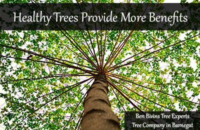

Trees are so beneficial to our lives. They are literally the source of life for us as they produce oxygen. Without trees, people would not exist. This is why it is so important to take good care of your trees and identify potential diseases or problems as soon as possible. Allowing even a small issue to persist for a small amount of time can do serious damage to the tree. In addition, many diseases can spread from tree to tree. Neglecting any ailments can wipe out acres of trees very quickly. Alongside with taking care of your trees, it is important to only plant native species of plants. The addition of non-native trees and flowers is just as detrimental to forests as non-native species of animals to other environments. For the health of your trees and the environment, contact a tree company in Barnegat today.Anthracnose Disease is Common in New Jersey
This fungus attacks many popular New Jersey shade trees. Species such as Oak, Ash, and Sycamore are all susceptible to this disease. If caught early enough, the fungus can be eradicated. However, if not detected, any tree with the ailment will need to be completely removed. This is why early detection is crucial. Be sure to actively look at the trees on your property often. Anthracnose symptoms could be dead area on leaves and early massive leaf loss. Anthracnose will thrive in a damp environment. One easy way to prevent this fungus to ensure all of your trees are planted appropriate distances away so that air can flow freely around each of them.
Tree Company in Barnegat Warns Against Oak Wilt
Just as Anthracnose can spread from tree to tree, Oak wilt can easily wipe out groves of trees if left untreated. Plus, it is not cheap to deal with this disease. Oak wilt is best identified by looking at the tops of the trees. Wilting and loss of leaves will begin at the top of the tree and advance rapidly. If you do not call a tree company in Barnegat in time, this illness moves from tree to tree via the root system. This is how it can easily kill off a whole stand of Oak trees so quickly. Oak wilt requires its host to be alive. So once the oak is dead, the wilt is dead too.
Apple Scab is Destructive
Yet another fungus, apple scab kills leaves of apple and crabapple trees. In the worst cases, it can leave a tree completely barren. This disease first shows signs in late spring and looks like dark spots on the leaves. If you notice your apple or crabapple trees are losing color in their leaves, apple scab could be to blame. The fruit on the tree will also form dark lesions, rot prematurely, and fall off. While apple scab isn’t a quick killer, continued infections year after year significantly weaken the tree. This makes them less able to fend off other pests and conditions. A pesticide applied in the spring is the best way to manage this problem.
Leaf Scorch is a Familiar Foe of Tree Company in Barnegat
We want to mention this in particular because this is not a fungus. Leaf scorch https://mortonarb.org/plant-and-protect/tree-plant-care/plant-care-resources/leaf-scorch/ is a symptom of a stressed-out tree. It can happen to any plant. A variety of bad conditions can be to blame for leaf scorch. Disruption of the soil from excavation nearby, poor soil conditions including unfavorable biodiversity and nutrient deficiency, and severe weather conditions like drought can all cause the tissue of the leaves to die. As an example, in dangerously warm weather, moisture is lost through leaves faster than roots can resupply it. Transplanting can be very stressful on a plant which makes it also very sensitive to things like leaf scorch.
Tree Company in Barnegat is Here to Help
It’s important to know that any disease is a threat to your trees. Once a tree has a pest or illness, it is weakened. This makes it much more vulnerable to other issues. It is so essential to keep an eye on the health of your trees. Disposing of any diseased trees or tree parts should be done properly. Otherwise, you risk suffering the same fate all over again. Never compost infected tree branches or leaves. Removing dead limbs, crown reduction, and pruning are all tree services in Barnegat that help keep trees healthy and strong. If you need a tree company in Barnegat, contact Ben Bivins Tree Experts. We company provides a full spectrum of tree services all over Ocean County and Monmouth County. Maintaining healthy trees on your property helps not only keep your yard beautiful and safe, but helps the environment as well.